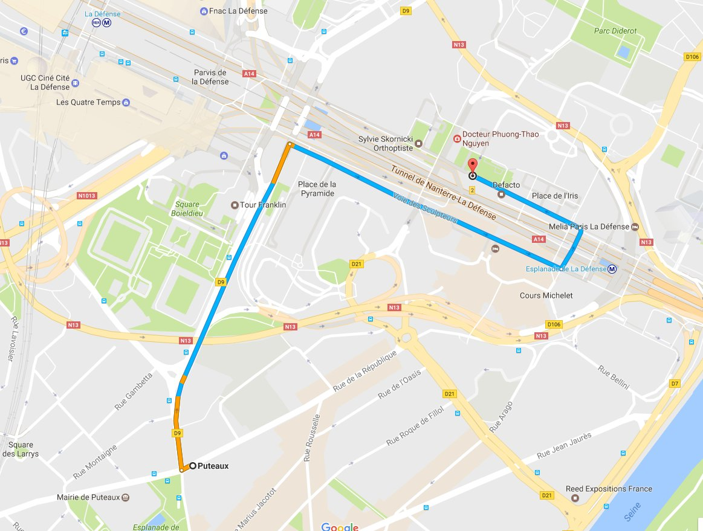
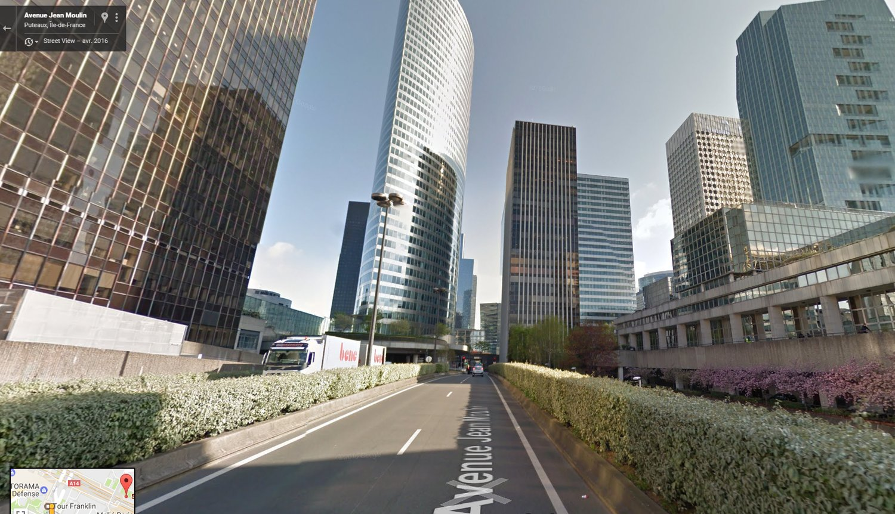
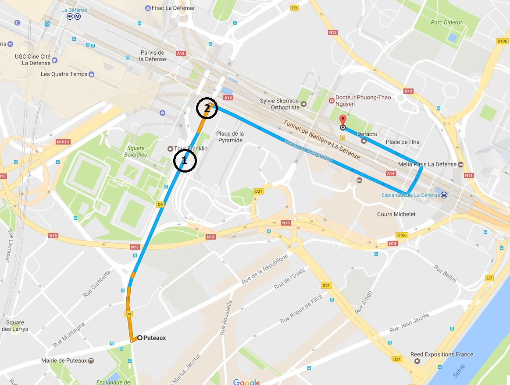
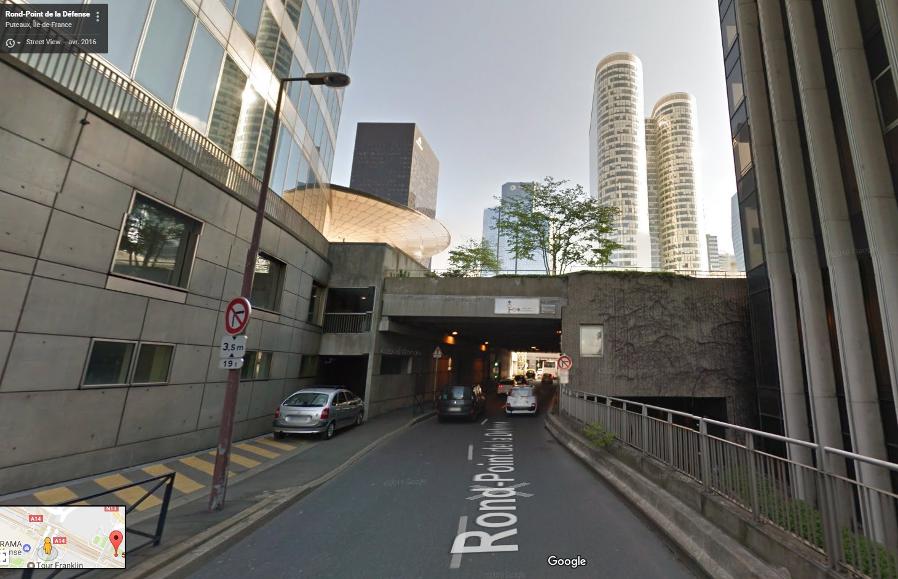
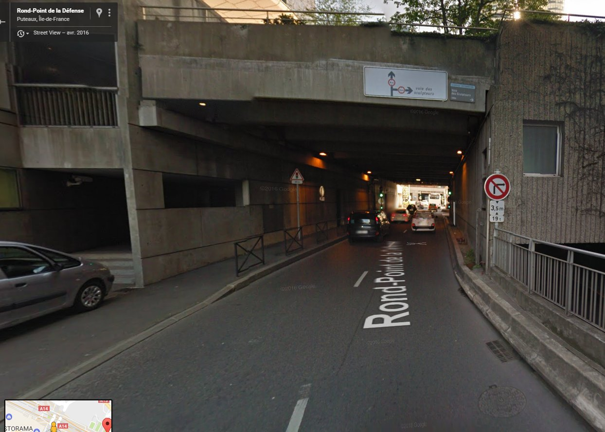
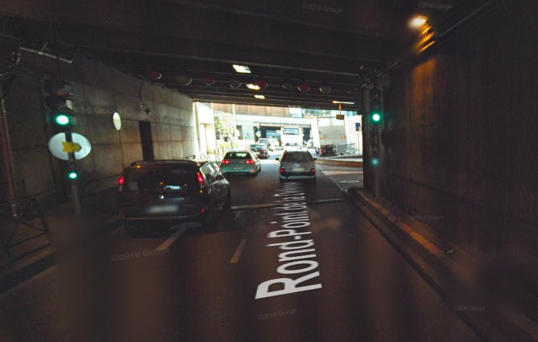

Si vous venez de Puteaux, ou en passant par Puteaux, vous devez aller vers La Défense Centre. Il faut passer par la voie des Sculpteurs.
Schématiquement, c'est le trajet suivant.

Si vous voyez la photo suivante, vous êtes au point 1 de la carte d'après.


Au point 2, vous êtes proche d'un petit tunnel. En haut, vous verrez le panneau voie des Sculpteurs.

Plus proche encore, donc c'est la première à droite.

Quand vous êtes sous le tunnel, vous verrez un feu, et tout de suite après le feu, à droite.

La voie des Bâtisseurs monte dans le sens de la circulation, vous ne pouvez pas revenir en arrière. De l'autre côté, en parallèle, c'est la voie des Sculpteurs, et elle descend.
Remontez jusqu'au bout de la voie des Bâtisseurs : vous tombez sur le rond-point de la Défense. Faites le tour, à droite puis à gauche.